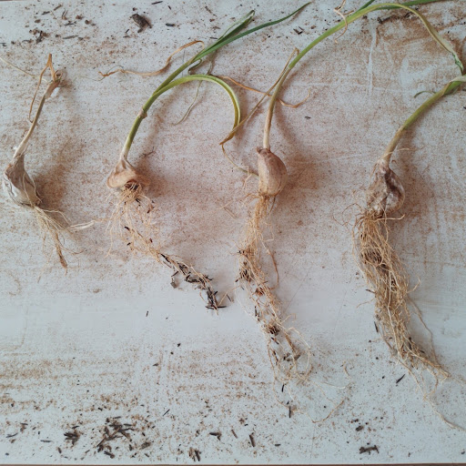

- CEJPC
- Colégio Estadual James Patrick Clark


Análise do Irrigamento do Alho
A Biotecnologia Verde está presente em diversas técnicas de cultivo, o seu principal objetivo é aplicar/aprimorar táticas de produção na agricultura. Utiliza-se muita vezes a transgenia, um mecanismo que consiste na modificação da genética das plantas. Esse ramo da biotecnologia tem como intuito melhorar a qualidade dos alimentos e a sua capacidade de produção. O Allium sativum é uma planta de propagação vegetativa, assim a sua multiplicação é realizada através dos dentes de alho (bulbos). Essa técnica gera o desenvolvimento de indivíduos idênticos à planta-mãe, desse modo, impossibilita a variabilidade genética. Isso porque, após diversas colheitas, os genótipos colhidos começam à apresentar degeneração e acúmulo de doenças; causando perdas na produtividade. Essa espécie é comumente usada na culinária e reconhecida cientificamente pela sua grande capacidade de auxiliar o sistema imunológico a combater diversas doenças, como: pressão alta, gripes e resfriados, bronquite, enxaqueca, entre outras